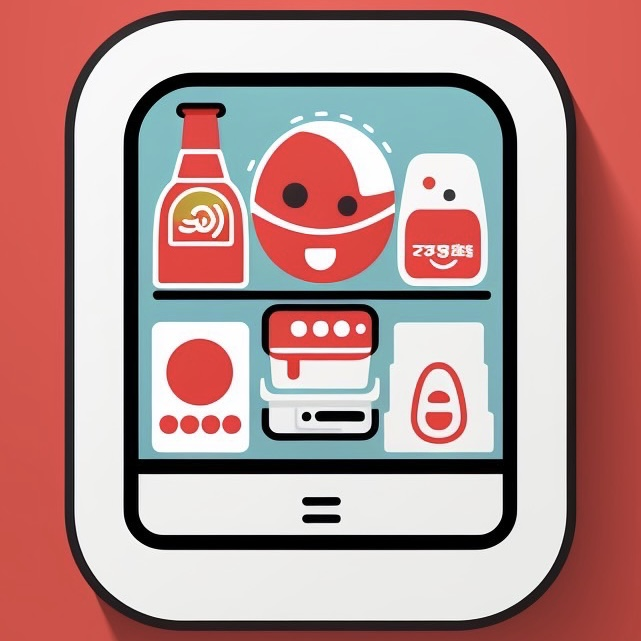

Our Application
VendEye
This app's objective is to give users a simple way to locate nearby vending machines and obtain pertinent details including menu items, costs, and other essential data. For easy accessibility across various devices, the app will be developed as a website.
Aplication Icon

Application Features
The vending machine app will include the following core features:
- Geolocation and Routing:
- The app utilizes the device's GPS to identify the user's current location.
- Users can easily find nearby vending machines on a map.
- The app provides optimized routes to reach the selected vending machine, taking into account walking or driving directions.
- Search Functionality:
- Users can search for specific drinks or foods available in vending machines.
- The search feature allows users to filter results based on drink or food preferences, such as snacks, beverages, healthy options, etc.
- Users can also search for vending machines based on price range, helping them find options within their budget.
- Roulette/Gamification:
- For users who have trouble deciding what to drink or eat, the app offers a roulette/gamification feature.
- The roulette randomly suggests a drink or food item available in nearby vending machines, adding an element of fun and surprise to the user experience.
- ICT Card Compatibility:
- Users can search for vending machines that accept ICT (Integrated Circuit Technology) cards, such as contactless payment methods or specific loyalty cards.
- This feature helps users locate vending machines where they can conveniently make payments using their preferred payment methods.
Additional Features (if time allows):
- Trash Can Geolocation:
- The app can include a feature to locate nearby trash cans or recycling bins.
- Users can find designated disposal areas to dispose of their vending machine packaging or other waste responsibly.
- This feature promotes environmental consciousness and encourages users to keep the surroundings clean.
- User Reviews and Ratings:
- Users can leave reviews and ratings for vending machines they have visited.
- This allows others to make more informed decisions based on the experiences of previous users.
- The app can display overall ratings and comments to help users identify vending machines with excellent service, a wide variety of products, or exceptional quality.
- Notifications and Alerts:
- Users can opt to receive notifications or alerts when they are near a vending machine offering special promotions, discounts, or new product launches.
- This feature keeps users informed about the latest offerings and helps them make the most of their vending machine experience.
Application Requirements
Check the apprication requirements
Target Market and User Stories
Check the target market and user stories
Application Diagrams
Check application diagrams
Similar Application
Click each link to view similar applications!